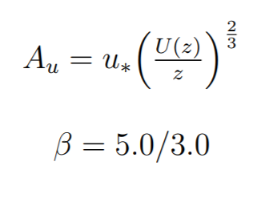

Abstract
Computer graphics simulations of wind are important in creating realistic representations of the world. In this project, we adopt the work of Dr. Khorloo Oyundolgor in A Study on Efficient Algorithms for Generating Virtual Wind Field Usable for Real-time Animation [1] to generate wind field maps. Using Oyundolgor’s noise-based algorithm, we generate dynamic wind field maps to demonstrate the computational efficiency of simulating wind. We proceed to apply this wind field to a fire animation simulation to demonstrate a manifestation of the wind field.
Technical Approach
Our project is broken up into two parts: simulating wind and applying wind to fire.
Wind Simulation
Our goal is to model wind as it changes over time in a 3D environment. We model a wind field by generating velocities at discrete points in 3D space through signals changing over time. We follow Oyundolgor's approach of using 1/f noise to model the power spectral density of these velocities. By applying formulas derived in the paper based off real historical wind data and converting back into the time domain, we are able to calculate wind velocities values for each point on the three axes.
Noise Generation
Noise, as defined by Oyundolgor, is "the random number generator of computer graphics" [1]. Noise is a simple and efficient to compute method of modelling the fluctuations and patterns of wind. In the paper, Oyundolgor describes of 1/fβ noise, where f f refers to frequency, and β refers to an exponent determining the fluctuation of the signal. This type of noise has a power spectral density (PSD) -- the power present at each frequency in a signal -- proportional to 1/f and is found in many natural phenomena, including wind velocities. In order to generate this noise, we begin by creating white noise from sampling from a standard normal distribution and then apply a fast Fourier transform to convert it into the frequency domain. We then multiply these values by a formula proprtional to 1 / frequency and apply an inverse fast Fourier transform to convert back into noise values in the time domain. This generates a simple form of 1/fβ noise. We assume that the data is sampled at 1Hz, and so the frequencies we need to calculate the spectrum values from range from 1/N hz to 1/2 Hz (Nyquist) with a step size of 1/N hz, where N is the number of samples taken in the time signal. This noise generation process can be generalized to higher dimensions by taking n frequency values for an n-dimensional signal at each timestep, using the same range and step size of frequencies for each dimension as in the 1-D case. Examples of 1-D, 2-D, and 3-D 1/fβ noise are included below.
|
|


Wind Data
In order to recreate realistic wind fields, Oyundolgor develops her models based off parameters from real world wind data. The variables included are:
- z - Height at which data was recorded
- z0 - Surface roughness constant
- U(z) - Mean wind speed at height
- U_hat(z) - Maximum recorded wind speed at height
- σ - Dispersion, the standard deviation of recorded wind speeds
- u* - Friction velocity of the wind, dependent on the mean wind speed, height, and surface roughness.
- I(z) - Wind turbulence intensity, σ(z) / U(z)
|
|
Putting it All Together
We can finally generate the wind field with the above information. We use the process outlined in the noise section to generate 4-D noise -- 3 dimensions since we are dealing with 3-D space, and one dimension for variation over time. Our spectrum values will be slightly modified in order to generate realistic velocities for the wind based on the data. Since our wind velocity at each position will be a 3-D vector, we must generate a velocity value for each directional component.
|  |

|
Su, Sv, Sw refer to power spectral values at each frequency for velocities in the x, y, and z directions respectively. These values are dervied from the 1/fβ noise formula above, where beta is chosen from analyzing spectra of real-world wind data. The A values are based off the real-world wind velocities and scale the spectrum values. We assume that turbulence in the secondary directions (v and w) are simply some smaller scalar multiple of the velocity in the main direction.
We then apply an inverse Fourier transform on these spectra to acquire the turbulence values for each components at each position and timestep. The actual wind velocity value will be the mean wind speed plus the turbulence value for the main direction, and simply just the turbulence values for the secondary directions.
|
|
Fire Simulation
In order to visualize the wind, we apply the generated wind field to a fire simulation. To model the fire, we use a particle emitter in Unity. We center the fire within the wind field. At each timestep, the velocity of each particle is set to the nearest sampled point in our 3-D wind field. Oyundolgor interpolates velocity values in her fire simulation to make it smoother. However, we decided not to do so in order to keep the simulation simple. Additionally, to make them look more realistic, we make the fire particles shrink and grow more transparent until the end of their lifespan.
Below is a video of the wind field by itself, without fire. Each plane represents a sampled point in space where we generate a wind velocity. The planes face in the same direction as the wind's velocity vector. Between each timestep, configured in our setup to be 1 second long, the planes linearly interpolate to face the wind's velocity at the next timestep. The colors of the planes have their R, G, and B components derived from the ratio of a wind vector's U, V, and W velocity components to the maximum U, V, and W components over the entire wind field (higher R value corresponds to a higher U component magnitude, for example). The colors of the planes are updated at each timestep.
Below is a video of the wind field with a particle system (representing fire) embedded within it. Here, instead of planes, we have cubes to represent locations where we generate the wind velocity vector. Without the wind field, the particle system applies an initial velocity on the particles to go upwards in world space. With the windfield, at each timestep in our simulation, we find the closest sampled location in the wind field to each particle. We set the particle's velocity to the sampled location's wind velocity. This is repeated at each timestep. When the particle leaves the wind field, it retains the last velocity that it sampled; we do this because we assume that wind velocity will generally remain the same in a volume around the wind field.
Below is a video of the fire without the wind field. As can be seen, our generated wind field makes it appear that the fire is being blown to the side.
Challenges and Lessons Learned
Our main challenge was generating realistic values for wind velocity. We did not have much experience dealing with Fourier transforms and data in the frequency domain. Additionally, Oyundolgor's paper was not entirely clear about how to use noise or what frequency values she uses to generate the spectra. We decided to use evenly spaced out frequency values based on the number of timesteps, as described in the noise section. However, since the spectra values were divided by the magnitude of the frequency values, and these values would become smaller the more timesteps we took, we ended up with wildly varying turbulence values. For our final model we decided to use 32 timesteps, which produced velocities somewhat close the real wind data we were trying to match.
Another challenge was implementing n-dimensional Fourier and inverse Fourier transforms in C# for Unity. We could not find a suitable library in C# that implemented these functions, so we decided to use Python instead. We generated wind fields in Python, wrote the values into a file, and loaded these in Unity. This means that our wind-field was not truly real-time, but this was due to the lack of C# libraries supporting n-dimensional Fourier transforms as opposed to computational efficiency issues.
Results
References
- Oyundolgor, Khorloo. “A Study on Efficient Algorithms for Generating Virtual Wind Field Usable for Real-Time Animation.” Iwate University, 2012.
- Wikipedia page for pink noise.
- fBm generation library
Contributions
Christopher Qian - Worked on generating the noise and wind field information and visualizations in Python. Contributed to wind field generation in C#. Modelled the fire particle emitter in Unity. Did writeups for checkin and final report.
Roger Luo - Worked on analyzing wind data to generate parameters. Loaded Python wind field data into Unity. Prepared PowerPoint slides and video for checkin and final presentation. Helped with writeup material.
Michael Hsiu - Implemented Fourier transforms and wind field generation in C# and implemented algorithm to apply wind field to particles in Unity. Created and recorded presentation videos of wind field and fire visualizations in Unity.